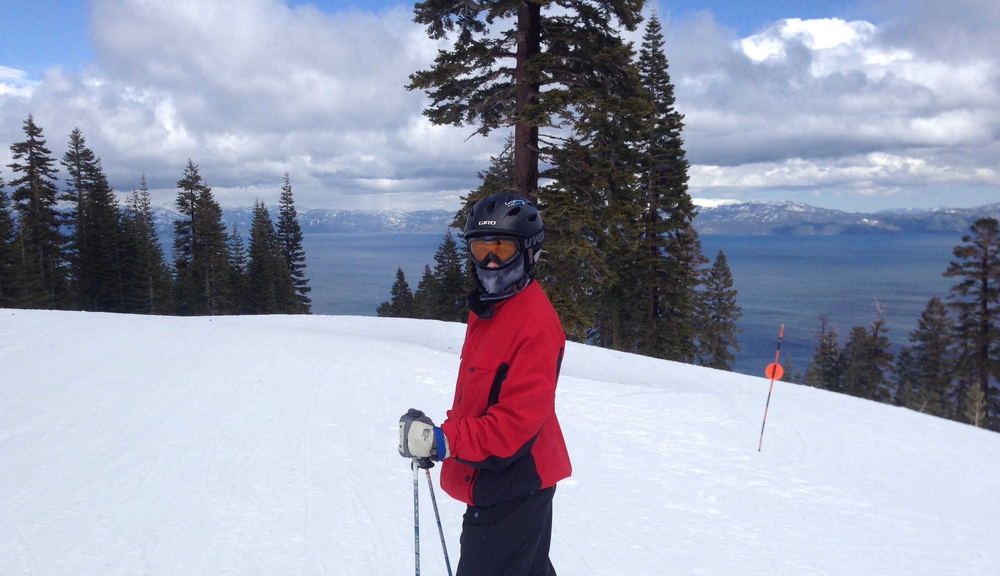

Skiing
Living in Pennsylvania, I was an avid skier, going most winter weeks to the local slopes, a 'resort' with only 5 runs.
My family often took trips to larger resorts in other states, but now that I live in the south, the opportunities are
rare. Some of my best memories have come from skiing with my aunt and uncle around Lake Tahoe (pictured below) and the
thrill of racing down the slopes.
